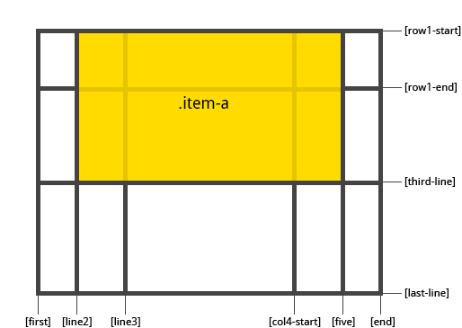

The Grid layout#
The GridBox class is a special case of the Box widget.
The Box widget enables the entire CSS flexbox spec, enabling rich reactive layouts in the Jupyter notebook. It aims at providing an efficient way to lay out, align and distribute space among items in a container.
Again, the whole grid layout spec is exposed via the layout attribute of the container widget (Box) and the contained items. One may share the same layout attribute among all the contained items.
The following flexbox tutorial on the flexbox layout follows the lines of the article A Complete Guide to Grid by Chris House, and uses text and various images from the article with permission.
Basics and browser support#
To get started you have to define a container element as a grid with display: grid, set the column and row sizes with grid-template-rows, grid-template-columns, and grid_template_areas, and then place its child elements into the grid with grid-column and grid-row. Similarly to flexbox, the source order of the grid items doesn’t matter. Your CSS can place them in any order, which makes it super easy to rearrange your grid with media queries. Imagine defining the layout of your entire page, and then completely rearranging it to accommodate a different screen width all with only a couple lines of CSS. Grid is one of the most powerful CSS modules ever introduced.
As of March 2017, most browsers shipped native, unprefixed support for CSS Grid: Chrome (including on Android), Firefox, Safari (including on iOS), and Opera. Internet Explorer 10 and 11 on the other hand support it, but it’s an old implementation with an outdated syntax. The time to build with grid is now!
Important terminology#
Before diving into the concepts of Grid it’s important to understand the terminology. Since the terms involved here are all kinda conceptually similar, it’s easy to confuse them with one another if you don’t first memorize their meanings defined by the Grid specification. But don’t worry, there aren’t many of them.
Grid Container
The element on which display: grid is applied. It’s the direct parent of all the grid items. In this example container is the grid container.
<div class="container">
<div class="item item-1"></div>
<div class="item item-2"></div>
<div class="item item-3"></div>
</div>
Grid Item
The children (e.g. direct descendants) of the grid container. Here the item elements are grid items, but sub-item isn’t.
<div class="container">
<div class="item"></div>
<div class="item">
<p class="sub-item"></p>
</div>
<div class="item"></div>
</div>
Grid Line
The dividing lines that make up the structure of the grid. They can be either vertical (“column grid lines”) or horizontal (“row grid lines”) and reside on either side of a row or column. Here the yellow line is an example of a column grid line.

Grid Track
The space between two adjacent grid lines. You can think of them like the columns or rows of the grid. Here’s the grid track between the second and third row grid lines.

Grid Cell
The space between two adjacent row and two adjacent column grid lines. It’s a single “unit” of the grid. Here’s the grid cell between row grid lines 1 and 2, and column grid lines 2 and 3.

Grid Area
The total space surrounded by four grid lines. A grid area may be comprised of any number of grid cells. Here’s the grid area between row grid lines 1 and 3, and column grid lines 1 and 3.

Properties of the parent#
grid-template-rows, grid-template-colums
Defines the columns and rows of the grid with a space-separated list of values. The values represent the track size, and the space between them represents the grid line.
Values:
<track-size>- can be a length, a percentage, or a fraction of the free space in the grid (using thefrunit)<line-name>- an arbitrary name of your choosing
grid-template-areas
Defines a grid template by referencing the names of the grid areas which are specified with the grid-area property. Repeating the name of a grid area causes the content to span those cells. A period signifies an empty cell. The syntax itself provides a visualization of the structure of the grid.
Values:
<grid-area-name>- the name of a grid area specified withgrid-area.- a period signifies an empty grid cellnone- no grid areas are defined
grid-gap
A shorthand for grid-row-gap and grid-column-gap
Values:
<grid-row-gap>,<grid-column-gap>- length values
where grid-row-gap and grid-column-gap specify the sizes of the grid lines. You can think of it like setting the width of the gutters between the columns / rows.
<line-size>- a length value
Note: The grid- prefix will be removed and grid-gap renamed to gap. The unprefixed property is already supported in Chrome 68+, Safari 11.2 Release 50+ and Opera 54+.
align-items
Aligns grid items along the block (column) axis (as opposed to justify-items which aligns along the inline (row) axis). This value applies to all grid items inside the container.
Values:
start- aligns items to be flush with the start edge of their cellend- aligns items to be flush with the end edge of their cellcenter- aligns items in the center of their cellstretch- fills the whole height of the cell (this is the default)
justify-items
Aligns grid items along the inline (row) axis (as opposed to align-items which aligns along the block (column) axis). This value applies to all grid items inside the container.
Values:
start- aligns items to be flush with the start edge of their cellend- aligns items to be flush with the end edge of their cellcenter- aligns items in the center of their cellstretch- fills the whole width of the cell (this is the default)
align-content
Sometimes the total size of your grid might be less than the size of its grid container. This could happen if all of your grid items are sized with non-flexible units like px. In this case you can set the alignment of the grid within the grid container. This property aligns the grid along the block (column) axis (as opposed to justify-content which aligns the grid along the inline (row) axis).
Values:
start- aligns the grid to be flush with the start edge of the grid containerend- aligns the grid to be flush with the end edge of the grid containercenter- aligns the grid in the center of the grid containerstretch- resizes the grid items to allow the grid to fill the full height of the grid containerspace-around- places an even amount of space between each grid item, with half-sized spaces on the far endsspace-between- places an even amount of space between each grid item, with no space at the far endsspace-evenly- places an even amount of space between each grid item, including the far ends
justify-content
Sometimes the total size of your grid might be less than the size of its grid container. This could happen if all of your grid items are sized with non-flexible units like px. In this case you can set the alignment of the grid within the grid container. This property aligns the grid along the inline (row) axis (as opposed to align-content which aligns the grid along the block (column) axis).
Values:
start- aligns the grid to be flush with the start edge of the grid containerend- aligns the grid to be flush with the end edge of the grid containercenter- aligns the grid in the center of the grid containerstretch- resizes the grid items to allow the grid to fill the full width of the grid containerspace-around- places an even amount of space between each grid item, with half-sized spaces on the far endsspace-between- places an even amount of space between each grid item, with no space at the far endsspace-evenly- places an even amount of space between each grid item, including the far ends
grid-auto-columns, grid-auto-rows
Specifies the size of any auto-generated grid tracks (aka implicit grid tracks). Implicit tracks get created when there are more grid items than cells in the grid or when a grid item is placed outside of the explicit grid. (see The Difference Between Explicit and Implicit Grids)
Values:
<track-size>- can be a length, a percentage, or a fraction of the free space in the grid (using thefrunit)
Properties of the items#
Note: float, display: inline-block, display: table-cell, vertical-align and column-?? properties have no effect on a grid item.
grid-column, grid-row
Determines a grid item’s location within the grid by referring to specific grid lines. grid-column-start/grid-row-start is the line where the item begins, and grid-column-end/grid-row-end is the line where the item ends.
Values:
<line>- can be a number to refer to a numbered grid line, or a name to refer to a named grid linespan <number>- the item will span across the provided number of grid tracksspan <name>- the item will span across until it hits the next line with the provided nameauto- indicates auto-placement, an automatic span, or a default span of one
.item {
grid-column: <number> | <name> | span <number> | span <name> | auto /
<number> | <name> | span <number> | span <name> | auto
grid-row: <number> | <name> | span <number> | span <name> | auto /
<number> | <name> | span <number> | span <name> | auto
}
Examples:
.item-a {
grid-column: 2 / five;
grid-row: row1-start / 3;
}

.item-b {
grid-column: 1 / span col4-start;
grid-row: 2 / span 2;
}

If no grid-column / grid-row is declared, the item will span 1 track by default.
Items can overlap each other. You can use z-index to control their stacking order.
grid-area
Gives an item a name so that it can be referenced by a template created with the grid-template-areas property. Alternatively, this property can be used as an even shorter shorthand for grid-row-start + grid-column-start + grid-row-end + grid-column-end.
Values:
<name>- a name of your choosing<row-start> / <column-start> / <row-end> / <column-end>- can be numbers or named lines
.item {
grid-area: <name> | <row-start> / <column-start> / <row-end> / <column-end>;
}
Examples:
As a way to assign a name to the item:
.item-d {
grid-area: header
}
As the short-shorthand for grid-row-start + grid-column-start + grid-row-end + grid-column-end:
.item-d {
grid-area: 1 / col4-start / last-line / 6
}

justify-self
Aligns a grid item inside a cell along the inline (row) axis (as opposed to align-self which aligns along the block (column) axis). This value applies to a grid item inside a single cell.
Values:
start- aligns the grid item to be flush with the start edge of the cellend- aligns the grid item to be flush with the end edge of the cellcenter- aligns the grid item in the center of the cellstretch- fills the whole width of the cell (this is the default)
.item {
justify-self: start | end | center | stretch;
}
Examples:
.item-a {
justify-self: start;
}

.item-a {
justify-self: end;
}

.item-a {
justify-self: center;
}

.item-a {
justify-self: stretch;
}

To set alignment for all the items in a grid, this behavior can also be set on the grid container via the justify-items property.
from ipywidgets import Button, GridBox, Layout, ButtonStyle
Placing items by name:
header = Button(description='Header',
layout=Layout(width='auto', grid_area='header'),
style=ButtonStyle(button_color='lightblue'))
main = Button(description='Main',
layout=Layout(width='auto', grid_area='main'),
style=ButtonStyle(button_color='moccasin'))
sidebar = Button(description='Sidebar',
layout=Layout(width='auto', grid_area='sidebar'),
style=ButtonStyle(button_color='salmon'))
footer = Button(description='Footer',
layout=Layout(width='auto', grid_area='footer'),
style=ButtonStyle(button_color='olive'))
GridBox(children=[header, main, sidebar, footer],
layout=Layout(
width='50%',
grid_template_rows='auto auto auto',
grid_template_columns='25% 25% 25% 25%',
grid_template_areas='''
"header header header header"
"main main . sidebar "
"footer footer footer footer"
''')
)
Setting up row and column template and gap
GridBox(children=[Button(layout=Layout(width='auto', height='auto'),
style=ButtonStyle(button_color='darkseagreen')) for i in range(9)
],
layout=Layout(
width='50%',
grid_template_columns='100px 50px 100px',
grid_template_rows='80px auto 80px',
grid_gap='5px 10px')
)